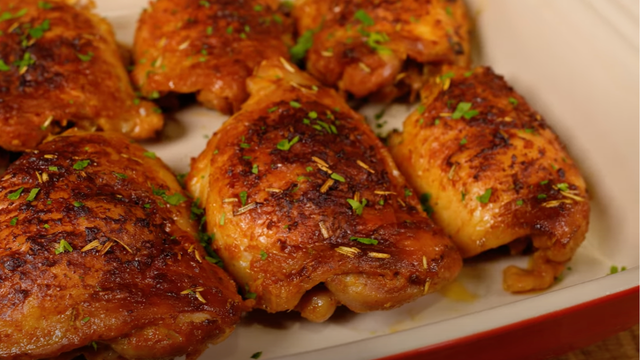

Frango Assado

Ingredientes
- 1 1/2 kg de sobrecoxa (ou outra parte de sua preferência) de frango
- 1 colher (sopa) de mostarda
- 2 colheres (sopa) de molho shoyu (opcional)
- 1 1/2 colher (sopa) de sal
- 1 colher (sopa) de páprica defumada
- 8 dentes de alho picados (opcional)
- Alecrim (a gosto)
- Pimenta (a gosto)
Modo de preparo
- Coloque o frango em uma forma e reserve
- Coloque a mostarda, shoyu (opcional), sal, páprica defumada e alho (opcional) em uma tigela para fazer o tempero
- Misture os ingredientes
- Incorpore o alecrim (a gosto)
- Coloque o tempero por cima do frango
- Certifique-se de cobrir todo o frango com o tempero
- Leve à geladeira por 24 horas (opcional)
- Cubra a forma com papel alumínio
- Asse no forno pré-aquecido à 200ºC por 45 minutos
- Retire o papel alumínio
- Leve novamente ao forno à 220ºC por 30 minutos ou até dourar
- Depois, é só servir!
← Voltar